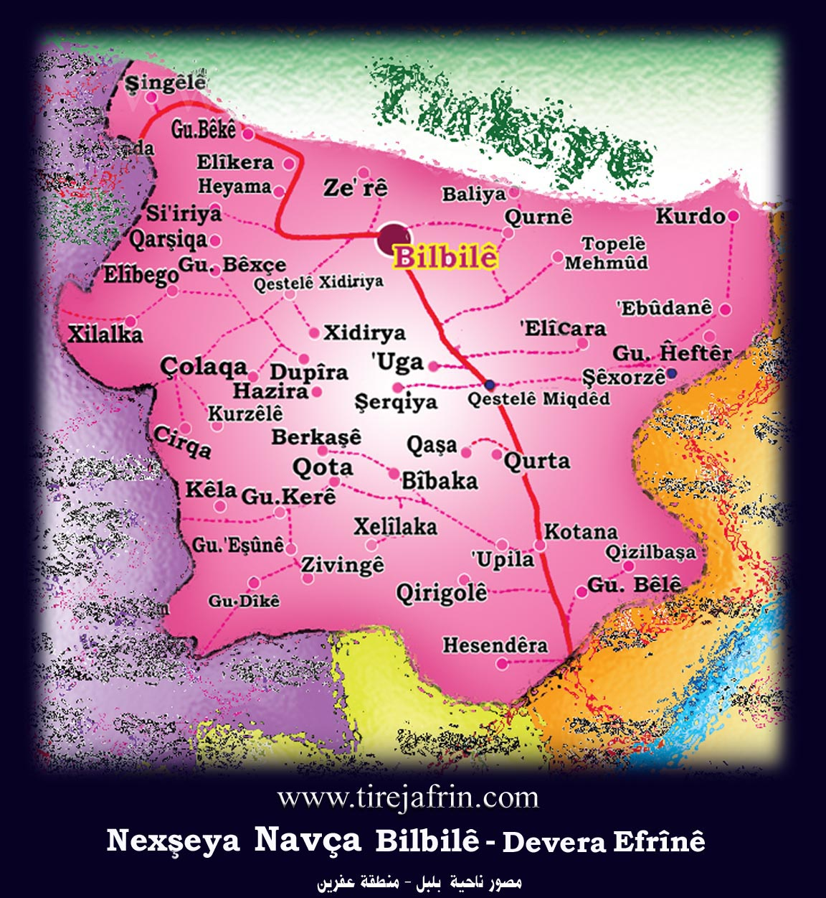
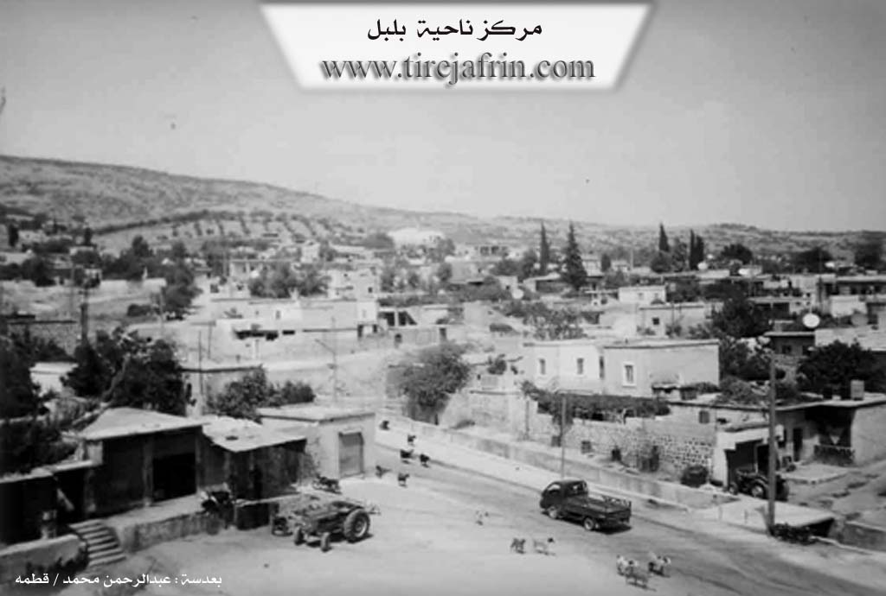

General Information
Nahiya (Subdistrict)
Bilbilê
Also Known As
Bilbil, Bilbilê, Ezê, بلبل
Tribes
Biyan, Dîban
Families, Clans, etc.
Cibko, Dadogo, Dadoxa, Elî Seydo, Hecî Şêx Xelîl, Hecî Şêxelîl, Hemlera, Hemlero, Hesenk, Qadirlero, Qadûrlera, Xûra, Xûro, Şêx Îsmaîl Zade

Photos


Basic Information about Bilbilê
Source: Ax û Welat
Etymology: Named after a nightingale Bilbil heard singing on a tree when the founders gathered to establish the village
Foundation Date/Period: Ottoman era
Springs: Qestel, Kaniya Esên, Kaniya Osman, Kaniya Kenarî, Kaniya Hemîd, Kaniya Barkoş, Kaniya Hemîl
Hills: Çiyayê Girt, Selîb, Geylê Eleqa, Hêra Mêrzê, Rişê Hesenko, Kumreş
Shrines: Tirbê Kil-Xelîl
Trees: Pînka Bilbilê
Other Landmarks: Tûyê Husik, Berkoş, Qestara Jûr, Aşê Elî Seydo, Binê Bîstana
Summaries
I. Summary from TirejAfrin Site (English) of Bilbilê
Source: https://www.tirejafrin.com/site/kura%20afrin%20%20%20bilbile%20-%20bilbile.htm
It is stated in the book Çiyayê Kurmênc Efrîn A Geographical Study: The district of Bilbil consists of 48 administrative divisions and residential clusters, with its center being the town of Bilbil. Its boundaries are: to the east the district of Şeran, to the west the district of Reco, to the south the district of Mabeta, and to the north the Turkish border. Bilbil: /4683 inhabitants/ 640m elevation.
Bilbil: The name of a bird (nightingale) that abounds in the mountain forests around the village. As for its name in the Ottoman era, it was Ezî, and it was perhaps from the name Ezzedîn.
The town of Bilbil is located at the end of the southern slope of the highest mountain in the Aleppo governorate, which is Girê Mezin, with a height of 1269m. The elevation of the town site above sea level is 690m. Bilbil is about 50km from the city of Efrîn and about 90km from Heleb (Aleppo) in a north-westerly direction. It is a small town, closer to being a large village, and has been the center of a district since the Ottoman era. It was the center for the Şêx Îsmaîl Zade family. The town is located in the middle of the area of the Biyan tribe. Its residents work in agriculture, especially olives, and some in livestock breeding. It contains some manual trades such as workshops for the maintenance of agricultural machinery, blacksmithing, some building materials, and some olive presses.
The site of Nebî Hûrî (the ancient city of Cyrrhus) is located to its east by about 12km. It is a large and important archaeological site and a beautiful tourist spot on the banks of the Efrîn and Sabûn rivers. In rainy years, dozens of springs burst forth around the town of Bilbil and its villages, transforming it into lush gardens. The mountain highlands in the Bilbil district contain iron and copper ore, and there are deposits of colored marble.
It is stated in the book Efrîn... Her River and Her Green Hills: Bilbil: A town in Çiyayê Kurmênc, and it is a district center belonging to the Efrîn area, Aleppo governorate. It is located to the northwest of the city of Efrîn on the lower, gently sloping southern slope of Çiyayê Damrik. The town is overlooked by the highest peak in Aleppo governorate (1269m). The mountain rocks are marly limestone, covered in most sections by green rocks and basalt. Its slopes, which have volcanic soil, are suitable for agriculture and grazing due to the availability of water from springs or wells.
It is bordered to the north by a high mountain called Çiyayê Damrik (Girê Mezin), the village of Balî Köy, Zehre, and the Turkish border directly. To the south, it is bordered by a slope, several flood channels, a high mountain chain, and the village of Okanlê. To the west, a mountain height, several flood channels, and the villages of Hiyamlê, Baxçe Qonaq, and Seeryanlê. To the east, a mountain height planted with olive trees and the villages of Qurne and Mehmûd Obesî. A valley descends from the top of the mountain, passes through the middle of the village, and heads south to Geliyê Okan.
The number of its houses is about 600, and its age is more than 700 years. Its old houses are stone and mud with flat wooden roofs, while the modern ones are cement, which have intermingled with the old construction and have begun to extend towards the south, east, and west. Available within it are an electricity network, state departments, a health center, a telephone center, a cultural center, several primary, preparatory, and secondary schools, a police station, a municipality house, a building for the district directorate, a bakery, several shops for maintaining agricultural machinery, blacksmithing, building materials, some old and modern olive presses, pharmacies, and doctors.
The town relies on rain-fed agriculture (790 hectares) for the production of olives, grains, legumes, and vines, alongside the raising of sheep and goats. Manual industries have also been established there, the most important of which are rug making and building materials for consumption. The town drinks from an artesian well belonging to the state located south of the town. The road to the villages of Bilbil and the regional center is paved.
As for the name of the town, it is a new name; its old name from the Ottoman era was Ezî. The town of Bilbil was the center for the people of Şêx Îsmaîl Zade, and it is located in the middle of the district of the Dîban tribe. To the south of the town, at a distance of 12km, lies the archaeological site of Nebî Hûrî, formerly named the city of "Cyrrhus." It is an archaeological and beautiful tourist site on the bank of the Efrîn river and Sabûn river. Among its most important old families is the Şêx Îsmaîl Zade family, the first to inhabit it hundreds of years ago.
Bilbil: A town in Çiyayê Kurmênc, belonging to the Bilbil district, Efrîn area, Aleppo governorate. It has been an old district center since the year 1922 AD. It includes 30 villages and 13 farms with a total area of 229.95 km². It is bordered directly to the north by the Turkish border, to the south and east by the districts of Şeran and Mabeta, and to the west by the district of Reco. Its elevation is 665m above sea level, and it is about 50km from the city of Efrîn and 90km from the city of Heleb. It is connected to its surroundings by main paved roads reaching the cities of Heleb and Efrîn and the neighboring villages. The Bilbil district was established in 1922.
Village Mukhtar: Mihemed Kûlîn Sîdo
Sources of Information:
- Book: جبل الكرد (عفرين) دراسة جغرافية Çiyayê Kurmênc (Efrîn): A Geographical Study by د. محمد عبدو علي Dr. Mihemed Ebdo Elî.
- Book: عفرين .... نهرها وروابيها الخضراء Efrîn... Her River and Her Green Hills by عبدالرحمن محمد Ebdulrehman Mihemed from the village of Qetme.
- Studies of Navenda Tirej Soft / Ebdulrehman Hacî Osman.
- Some residents of the villages.
Preparation and execution: Site manager Tirej Efrîn: Ebdulrehman Hacî Osman 20/12/2013
II. Summary of Bilbilê from Ax û Welat
Source: https://www.youtube.com/watch?v=ln8M1ByyOAo
The district center of Bilbil serves as a significant historical and administrative hub within the Efrîn region, situated in the high altitudes of Çiyayê Kurmênc. Geographically, the area is historically known as Çiyayê Girt, rising 1200 meters above sea level—a height that allows the lights of Kela Helebê (the Citadel of Aleppo) to be visible at night.
The origins of Bilbil date back to the Ottoman era. According to local elders, the settlement was not originally located at its current site. Instead, the founding population was composed of pastoralists living in scattered settlements on surrounding hills and localities such as Berkoş (also known as Tûyê Husik), Geylê Eleqa, Hêra Mêrzê, Rişê Hesenko, and Kumreş. While these locations offered high ground, they lacked sufficient water. The current site of the village was a dense thicket of reeds and trees with abundant water, initially inhabited only by wild animals. The difficulty of transporting water to their hilltop homes, combined with administrative pressures from Ottoman tax collectors, eventually compelled these scattered families to descend and consolidate their settlement around the water source.
The naming of the village is steeped in local lore. When the families first gathered to clear the land and build homes, they heard a bird singing on a tree. Upon asking what the bird was, they were told it was a Bilbil (nightingale), and thus they named their new home Bilbil.
The social structure of Bilbil is defined by six foundational families: Cibko, Xûro, Hemlero, Dadogo, Hecî Şêx Xelîl, and Qadirlero. A significant historical narrative involves the arrival of the Hesenk family, who were Aghas (landlords). A notable local figure, Hesikê Kûro of the Cibko family, fiercely opposed the entry of the Aghas into Bilbil, fearing they would bring oppression and ruin to the village. Hesikê Kûro stood against them until he was killed, after which the Hesenk family eventually settled there.
Water remains a central element of the village's identity. The central landmark is Qestel, a collection of springs that serves as the heart of the community. Before modern plumbing, this area included a mill known as Aşê Elî Seydo and agricultural plots called Binê Bîstana. The area is rich in named springs, including Kaniya Esên, Kaniya Osman, Kaniya Kenarî, and Kaniya Hemîd. Spiritual life is marked by the mention of Tirbê Kil-Xelîl, a site associated with a spring. Culturally, Bilbil retains a deep connection to Kurdish music, revering historical dengbêj (bards) such as Cemîl Horo, Reşîdê Memçûçanê, and Evdê Şerê.
II. Summary of Bilbilê from Ax û Welat 2
Source: https://www.youtube.com/watch?v=rf5ESvgSEYQ
The center of the Bilbil district, located in the Efrîn region, sits atop the high elevation of Çiyayê Gir, approximately 1200 meters above sea level. The location is so prominent that residents claim the Keleha Helebê is visible from the village at night when the city lights are on. The history of the settlement is rooted in the consolidation of scattered pastoral communities during the Ottoman era. Originally, the area where the village now stands was a dense thicket of trees and reeds surrounding a water source, inhabited by wild animals. The people lived in dispersed locations such as Berkêş (also known as Tûyê Husik), Geylê Eqa, Hêra Mêrzê, Rîşê Hesen Kuwêda, and Xeraşa.
The foundation of the modern village occurred due to Ottoman tax policies. Tax collectors found it difficult to travel between the scattered households to collect the vêrgî (tax). Consequently, the authorities encouraged or forced the families to gather and settle in one central location near the water source known as Qestel. When the families convened to build the village, they heard a bird singing on a tree. Upon identifying the bird as a Bilbil (nightingale), they named the new settlement Bilbil.
The social structure of the village was originally defined by six primary families: Cibko, Xûra, Hemlera, Dadoxa, Hecî Şêxelîl, and Qadûrlera. A notable historical figure from the Cibko family, Hesikê Kûroxlî, is remembered for his resistance against external Agha influence. When Aghas from Bêkê attempted to move into Bilbil to exert control, Hesikê Kûroxlî opposed them to protect the village's autonomy, eventually losing his life in the conflict.
Water plays a central role in the village's geography and memory. The central spring, Qestel, was the heart of the community where villagers washed clothes, watered livestock, and irrigated gardens known as Binê Bîstana. Other notable springs include Qestela Jûr, Kaniya Êsê, Kenarî, Osman, and Gilberkêş (also referred to as Kaniya Hemîd). There was historically a mill known as Aşê Elî Seydo near the water, though it no longer exists. A site mentioned near a spring is Tirbê Kelxelîl, implying a tomb or shrine.
Culturally, the village preserves the musical heritage of the Efrîn region. Residents recall listening to renowned singers like Cemîl Horo, Elî Tûjo, and Reşîdê Mem Çûçanê. The local cuisine includes distinct dishes such as şîşperek (meat and dough in yogurt), sermîsek, and qetmer. Today, Bilbil serves as a district center with various administrative institutions, yet it retains the oral history of its origins as a union of six shepherd families gathering around a spring.
Transcriptions and Subtitles
| Source | Video | Subtitles | Transcript |
|---|---|---|---|
| Ax û Welat 1 | Watch Video | Download SRT | View Transcript |
| Ax û Welat 2 | Watch Video | Download SRT | View Transcript |
Foundation/Origin Information of Bilbilê
It was the center of the Sheikh Ismail Zadeh family, and the town is located in the middle of the "Diban" tribal region.
Source: TirejAfrin Site
Possible Village Name Meaning of Bilbilê
Bilbil: A bird name (nightingale) that is abundant in the mountain forests around the village. Its name during the Ottoman period was 'Ezê' (Eh Zî), possibly derived from the name Izz al-Din.
Source: TirejAfrin Site